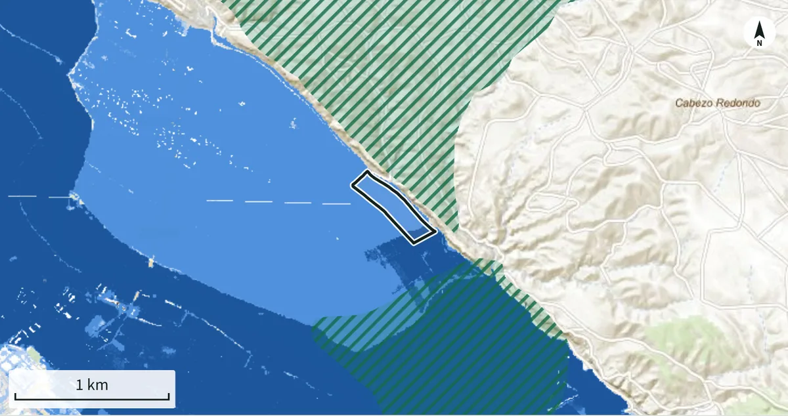

Abans de comprar una finca rústica, mira què hi ha sota l’anunci.
Escriu la referència cadastral o assenyala la parcel·la al mapa. En un minut veuràs què en diuen els mapes oficials i el satèl·lit: si s’inunda, si està protegida, quin pendent té i què li ha passat des del 2017.
Tot Espanya. A la resta del món, un informe bàsic si dibuixes el recinte.
- Catastro
- SIGPAC (FEGA)
- MITECO inundació i espais protegits
- IGN relleu i ortofoto
- Copernicus Sentinel-2
S’està preparant l’informe…
Un exemple real
Així es veu un informe
Una parcel·la de regadiu de 8 hectàrees a la ribera de l’Ebre, a Saragossa. Sobre el paper, una bona terra. Això és el que va sortir en consultar-la:
- El 15 % de la finca és dins la zona que s’inunda de mitjana cada 10 anys.
- Tota la finca queda dins les zones que s’inunden de mitjana cada 100 i cada 500 anys.
- Cap espai protegit sobre la parcel·la.
- Dues caigudes de vegetació des del 2017, totes dues ja recuperades.
Lurra · Informe de finca
Polígon 204, parcel·la 276
Soto de Alfocea, Saragossa · 80.200 m² (8,02 ha)
Vermell: hi ha limitacions importants que cal comprovar
3 punts que convé aclarir; el detall és a l’apartat 7.

Zones inundables (blau) i espais protegits (ratllat verd) al voltant de la parcel·la.
Vigor de la vegetació (NDVI) mes a mes, del 2017 al 2026. En vermell, les dues caigudes.
Contingut
Què inclou l’informe
Set apartats, en l’ordre en què convé llegir-los. Cada dada indica la font oficial i la data.
Fitxa cadastral
Superfície, ús, conreus per subparcel·la i comparació entre la superfície cadastral i la mesurada sobre el recinte.
Relleu
Altitud, pendent mitjà i màxim, part de la finca amb més del 20 % de pendent i orientació, amb el model del terreny de 5 m de l’IGN.
Aigua
Quina part de la finca és dins les zones que s’inunden de mitjana cada 10, 100 i 500 anys, pels rius o pel mar, segons la cartografia oficial.
Protecció ambiental
Xarxa Natura 2000 i espais naturals protegits que toquen la finca, amb el nom, el codi i els metres afectats.
Ús del sòl
Recintes SIGPAC de la parcel·la: ús reconegut, pendent i regadiu.
Historial per satèl·lit
Vigor de la vegetació mes a mes des del 2017 amb Sentinel-2, i les caigudes brusques que apunten a tales, incendis o obres.
Resum i preguntes
Un semàfor d’atenció i la llista de preguntes per fer a l’ajuntament, al registre i al venedor.
VerdVermell
Com funciona
Tres passos, sense registre i sense esperes
Indica la finca
Amb la referència cadastral, amb un clic sobre la parcel·la al mapa o dibuixant el recinte.
El teu navegador consulta les fonts
Pregunta en aquell moment al Cadastre, al SIGPAC, al Ministeri per a la Transició Ecològica, a l’IGN i a Copernicus, i fa els càlculs. No hi ha còpies desfasades, i Lurra no rep ni desa la referència que consultes.
Llegeix el semàfor i desa l’informe
El resum i els apartats surten en segons; l’historial per satèl·lit triga un o dos minuts. Desa l’informe en PDF o copia’n l’enllaç.
Tot Espanya, i un informe bàsic a la resta del món. Funciona amb qualsevol parcel·la del Cadastre i, amb un clic al mapa, també al País Basc i a Navarra. Si dibuixes un recinte en un altre país, tindràs relleu, coberta del sòl, espais protegits, una primera aproximació al risc d’inundació i l’historial per satèl·lit.
Límits
El que aquest informe no és
No és
- No diu si s’hi pot construir: això depèn del planejament de cada municipi i cal demanar-ho a l’ajuntament.
- No és una taxació ni un aixecament topogràfic.
- No substitueix la nota simple del Registre.
Sí que és
- El pas previ: en pocs minuts saps si la finca té un problema evident.
- La llista del que cal preguntar abans de donar una paga i senyal o d’encarregar un estudi a un tècnic.
- Un resultat informatiu i no vinculant.
Guies
Per entendre el que estàs mirant
Textos breus sobre què cal comprovar en una finca rústica abans de comprar-la, i on és cada dada.
- Catastro de una finca rústica: cómo consultarlo gratis y qué datos daDónde se consulta el Catastro de una parcela rústica, qué datos son públicos, qué significan los cultivos y qué no dice.
- Qué comprobar antes de comprar una finca rústicaUna lista ordenada de comprobaciones: papeles, superficie, acceso, agua, protecciones e historia del terreno.
- ¿Se puede construir en una finca rústica?Qué suele permitirse en suelo rústico, quién lo decide, qué papeles pedir y qué pasa con las casas ya construidas.
- Cómo saber si una finca rústica es inundableQué son las zonas inundables a 10, 100 y 500 años, dónde se consultan y qué límites tiene la cartografía oficial.
- Finca en Red Natura 2000: qué significa y cómo comprobarloQué implica que una finca esté dentro de un espacio protegido, qué se puede hacer y a quién preguntar.
- La nota simple de una finca rústica: cómo pedirla y cómo leerlaQué dice la nota simple del Registro de la Propiedad, qué no dice y por qué no siempre coincide con el Catastro.
- SIGPAC: qué es y qué te dice de una finca antes de comprarlaRecintos, usos, pendiente y regadío en el SIGPAC: cómo leerlos y por qué no acreditan la propiedad.
- Cómo encontrar la referencia catastral de una finca rústicaDónde aparece la referencia catastral, cómo se lee y qué hacer en Navarra y el País Vasco.
- Cómo leer el informe de LurraQué significa cada apartado del informe, de dónde sale cada dato y hasta dónde te puedes fiar.
Dubtes
Preguntes freqüents
Què vol dir cada apartat i fins on te’n pots refiar ho trobaràs a la guia Com llegir l’informe (en castellà).
On trobo la referència cadastral?
Al rebut de l’IBI, a l’escriptura i a la nota simple. Si no la tens, obre la pestanya «Cerca al mapa», apropa el mapa fins a la finca i fes-hi clic: el contorn surt del Cadastre o del SIGPAC.
Quant costa?
Res. El servei està en fase de proves i els informes són gratuïts i sense límit.
Serveix per a una finca al País Basc o a Navarra?
Sí. Els seus cadastres són forals i la referència no funciona aquí, però pots triar la parcel·la amb un clic al mapa: el recinte s’agafa del SIGPAC, que cobreix tot Espanya.
Si l’informe diu que no és inundable, puc estar tranquil?
No del tot. La cartografia oficial només cobreix els trams de riu estudiats. «No» vol dir que sobre la parcel·la no hi ha cap zona inundable cartografiada, no que el risc sigui zero. En cas de dubte, pregunta a l’organisme de conca.
Per què triga la part del satèl·lit?
Perquè el teu navegador llegeix, mes a mes, el tros de cada imatge de Sentinel-2 que cobreix la finca: entre 80 i 200 MB en total, segons la zona, en un o dos minuts. La resta de l’informe surt en segons, i pots aturar la lectura quan vulguis: es comença pels anys més recents.
Puc desar l’informe?
Sí: amb «Desa en PDF o imprimeix», el teu navegador genera el PDF. També pots copiar l’enllaç per tornar-lo a generar o descarregar les dades.
I si la finca és en un altre país?
També serveix. Dibuixa el recinte al mapa o puja un fitxer GeoJSON o KML: tindràs el relleu, la coberta del sòl, els espais protegits de la base mundial Protected Planet, una primera aproximació al risc d’inundació amb un model global i l’historial per satèl·lit. Les dades cadastrals, les zones inundables oficials i l’ús SIGPAC només existeixen per a Espanya.
Tens una finca al cap?
Fes l’informe ara: és gratis, no demana registre i triga més o menys un minut.
Fes l’informe